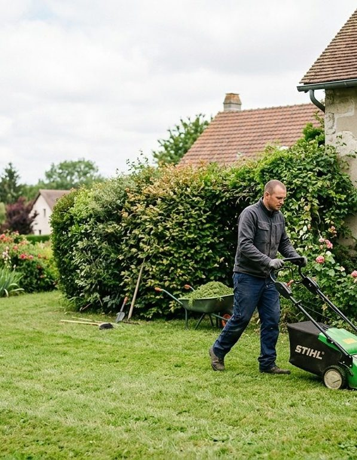
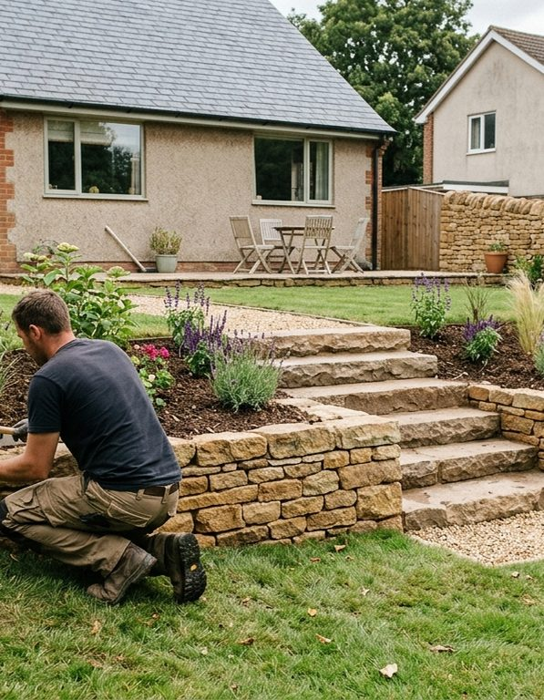

Créée en 2020
SAS immatriculée à Maurepas, dans les Yvelines.
Aménagement paysager à Maurepas (78)
Espace Vert Lemonnier crée, plante et entretient vos espaces verts à Maurepas, dans les Yvelines. Parlez-nous de votre projet.



Nos prestations
Quatre domaines pour des espaces verts soignés toute l'année.
Un jardin pensé selon votre terrain et vos envies.
Arbustes, massifs et pelouse mis en place avec soin.
Tonte, taille et suivi pour garder le jardin en forme.
Allées, terrasses et petits ouvrages pour votre extérieur.
À propos
Espace Vert Lemonnier, SAS créée en 2020 et dirigée par Catherine Jouan, intervient dans l'aménagement paysager.
SAS immatriculée à Maurepas, dans les Yvelines.
Entreprise de 1 à 2 salariés en 2024, pour un échange direct.
Joignable par téléphone ou par e-mail pour votre projet.
Décrivez votre projet à Espace Vert Lemonnier : l'entreprise vous répond par téléphone ou par e-mail.
Aménagement paysager à Maurepas (78).
© Espace Vert Lemonnier · Maquette de démonstration